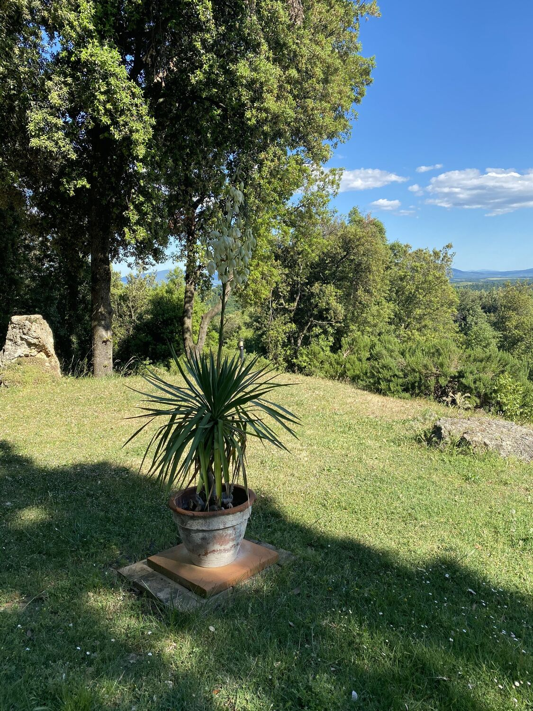
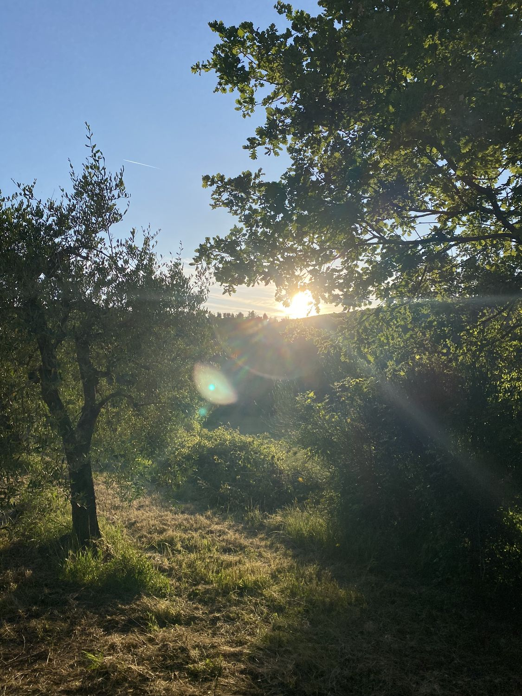
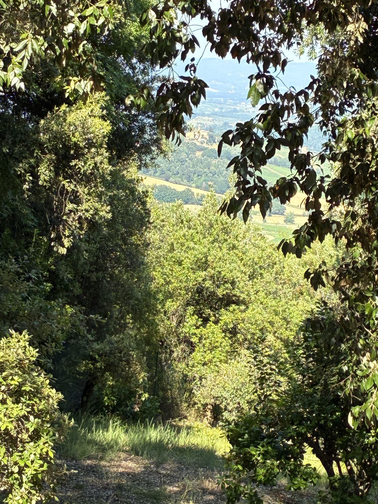
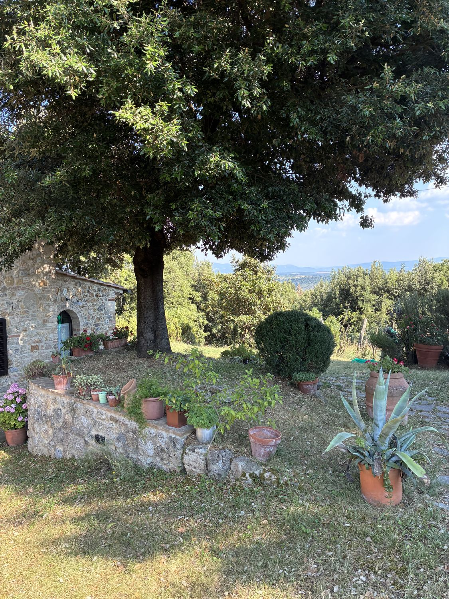
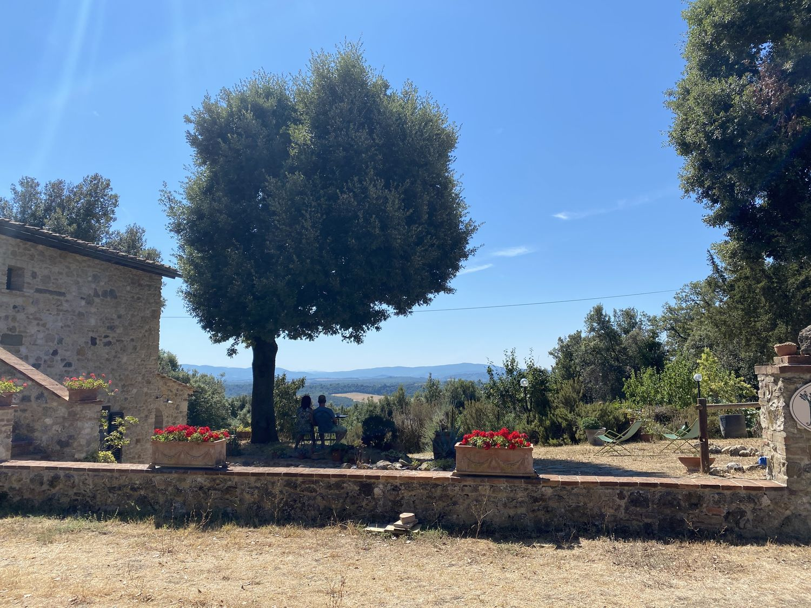
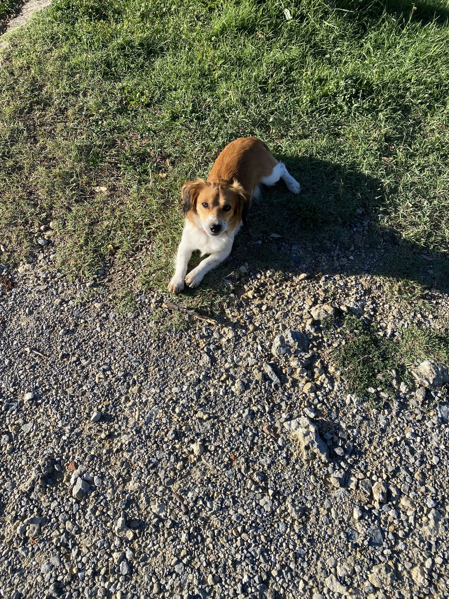
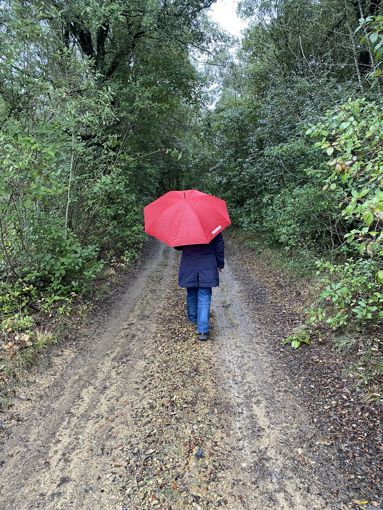
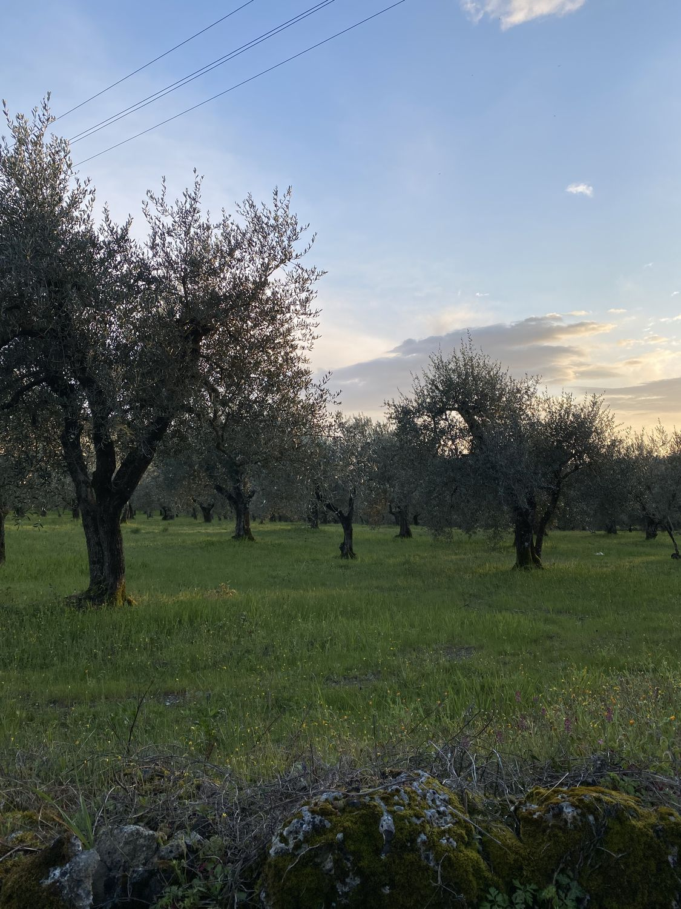
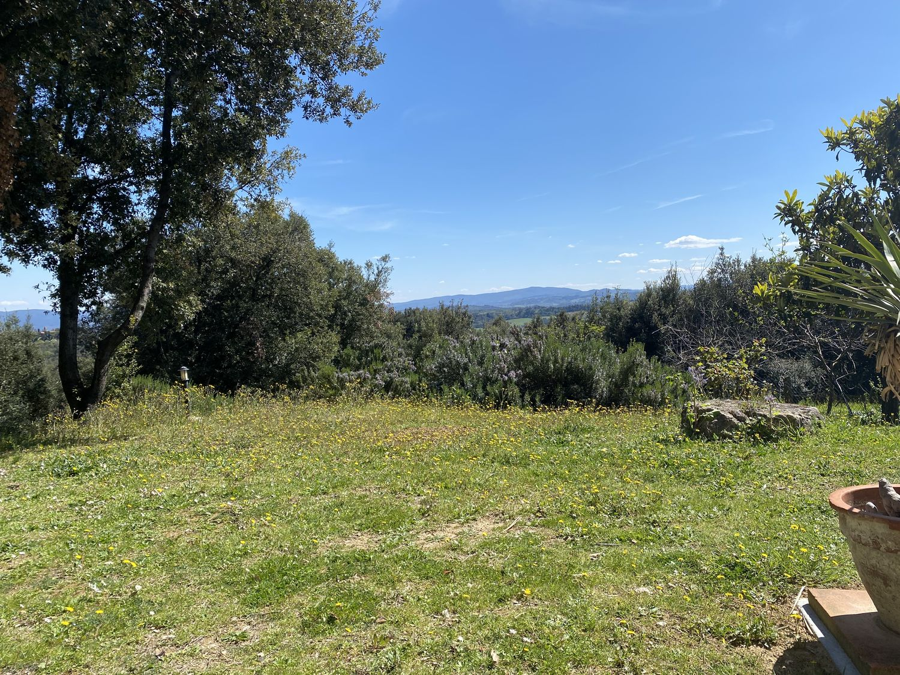

About Us
A farmhouse, a hill, a family. And the choice to live to the rhythm of the land.

The Estate
La Collina dei Lecci is a farmhouse dating back to 1780, sitting on a hill near San Gimignano. The name comes from the ancient holm oaks (lecci) that surround the house — trees that were already here when the farmhouse was built, and which still cast their shade over the garden every summer.
The property includes a vineyard, olive grove, vegetable garden and woodland — all tended by the family who lives here.
The History
The farmhouse was worked by sharecroppers until the 1950s. Then the rural exodus emptied the countryside, and for thirty years the rooms stayed closed, the furniture draped in sheets.
The restoration kept the original structure and added what was needed for comfort.
The agriturismo was born in 2003, almost by chance: friends of friends asking to stay for a few days. Then guests who came back every year. Then others who arrived for the first time and stayed longer than planned.
"We didn't turn a farmhouse into a hotel. We opened our home to those who want to share our way of life — even if just for a few days."
How We Work
We cultivate following the rhythms of the countryside, working as a family.
We work as a family, with the help of a few local people during the grape and olive harvests. We don't have full-time staff, entertainment organisers, or room service. It's just us — and for those who come here, that is usually the whole point.
Our Photos
Sunsets, sunny days, and a few photos of our legendary dog Totò!











